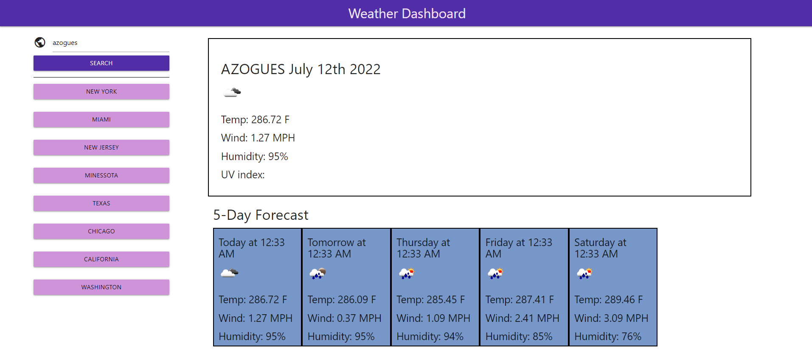
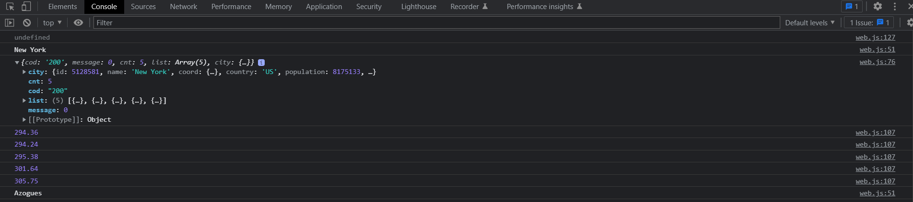

Short code example:
function Weather_app(city){
var url = (`https://api.openweathermap.org/geo/1.0/direct?q=${city},&limit=${Number}&appid=${keyCR}`);
var cityName;
var latCity;
var lonCity
var climateAPI = fetch(url).then(function(ResposeWeather){
var WeatherData = ResposeWeather.json();
return WeatherData;
})
.then(function(ArrData){
cityName = ArrData[0].name;
//console.log(cityName);
latCity = ArrData[0].lat;
//console.log(latCity);
lonCity = ArrData[0].lon;
//console.log(lonCity);
passData(latCity,lonCity);
})
.catch(function(err){
console.log(err);
console.log('here is an error');
})
;
}
Information about the code.
This part of the code is an Function that is going to call an API and get back the information about certain area. Information like: wheather,temp ,wind ,humidity and UV index.
If you would like to give it a try, you can check it out in this link: 👇
Weather-Dashboard  